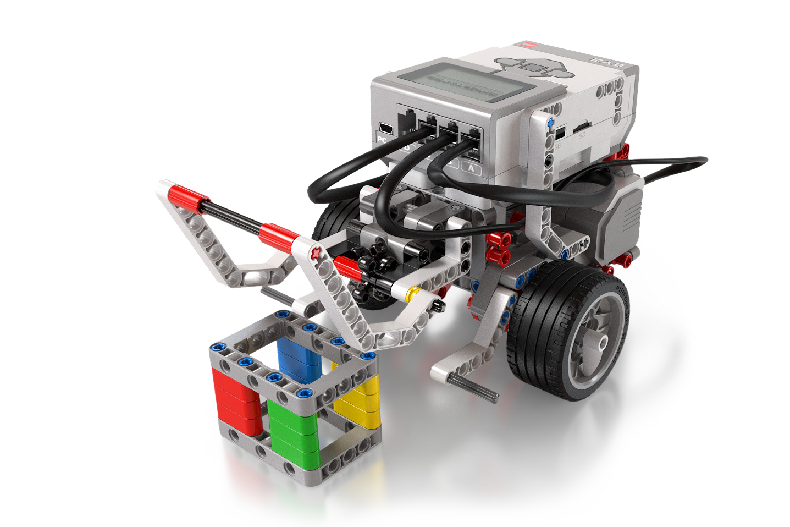
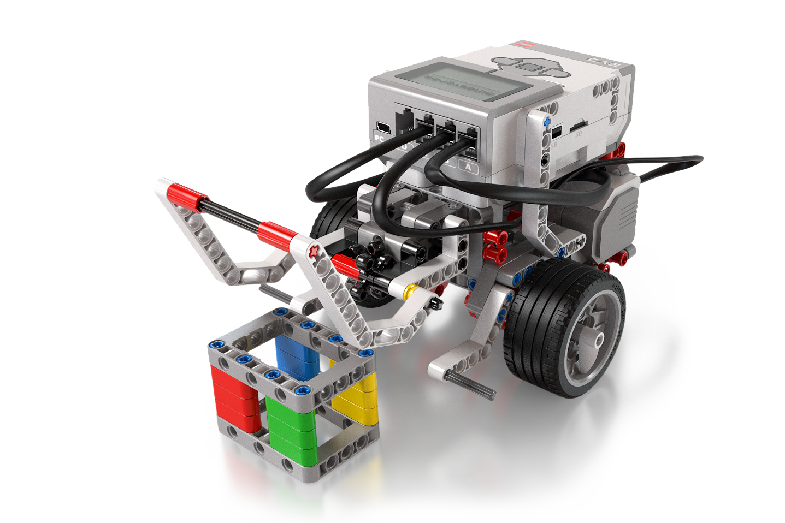

Presentación
Con el objetivo de dar respuesta a la necesidad de formar al alumnado en las nuevas disciplinas que han surgido durante los últimos años y que más expectativas de desarrollo tienen en los siguientes, se ha visto necesario el planteamiento de materias que tengan como eje vertebrador la digitalización y el pensamiento computacional.
La materia Control y Robótica constituye la base para fomentar el pensamiento computacional, la programación de sistemas, la implementación de dichos programas en sistemas de control y, en definitiva, la robotización.
Con esta materia, se pretende que el alumnado tome contacto con los sistemas de control y robótica de una forma sencilla y que conozca cómo los mismos se están imponiendo en todas las áreas de nuestra vida cotidiana. La materia contribuye a la formación para los retos del siglo XXI. Así, se abordan aspectos de automatización y robotización, partiendo de la programación de dichos sistemas, ampliando la interoperabilidad de los sistemas robotizados, haciendo de la interconectividad su hilo conductor.
La evolución ha desembocado en el internet de las cosas (IoT) en la robótica y el control, enlazando diferentes procesos y permitiendo programar y recibir datos desde sistemas que están al otro lado del mundo. Por tanto, la materia contribuye al desarrollo de proyectos de una manera sencilla debido a los avances recientes en los sistemas programados.

 

Contenidos
Se impartirán los siguientes contenidos:
- Sistemas Automáticos de Control
- Fundamentos de Robótica
- Programación y Control
- Proyectos de robótica
Los dos primeros puntos, son la explicación teórica de qué es un sistema automático y de qué partes físicas están compuestos. Esta 1ª parte teórica es muy sencilla y se imparte en los primeros quince días de clase. El tercer punto es la programación y simulación, de diferentes sistemas automáticos con la plataforma TinkerCad, con la que se programa muy sencillamente por medio de bloques. Este punto es el grueso de la asignatura y dura durante todo el curso, empezando a programar sistemas más sencillos en el 1º trimestre, y ampliando los conocimientos en el 2º y 3º trimestre. El punto cuarto es llevar a la práctica, algunos de los sistemas programados anteriormente. Este punto se realizará en el 3º trimestre utilizando placas de Arduino.